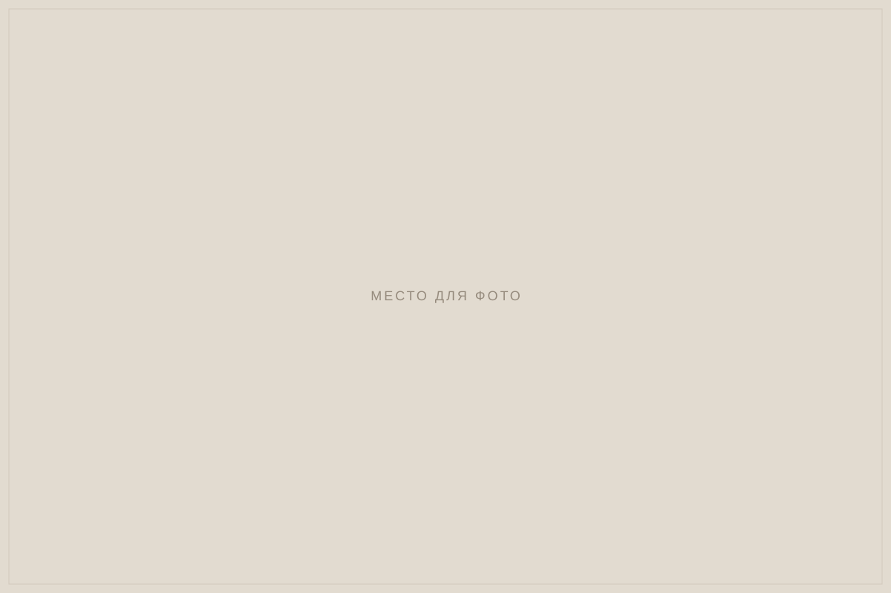

Для маркетри не нужна большая мастерская: первые работы можно сделать за обычным столом. Рассказываем, какие инструменты понадобятся и как их выбирать.

Режущие инструменты
Нож-резак. Главный инструмент мастера маркетри. Подойдёт скальпель или нож со сменными тонкими лезвиями. Важно, чтобы нож удобно лежал в руке и лезвие было всегда острым: запас лезвий нужен с первого дня.
Лобзик. Нужен для пакетной резки, когда несколько листов шпона режут одновременно. Профессионалы используют шевале — специальный станок с пилой, закреплённой горизонтально. Для начала достаточно ручного лобзика с тонкими пилками.
Подложка для резки. Режущий коврик или лист плотного картона защищает стол и лезвие.
Металлическая линейка — для прямых резов в геометрических наборах.
Перевод эскиза и сборка
- Калька и копировальная бумага — чтобы перевести рисунок на шпон.
- Бумажная лента — гуммированная или малярная. Ею скрепляют детали набора с лицевой стороны.
- Пинцет — для мелких деталей.
- Мягкий карандаш — для разметки.
Склейка
Основа. Набор наклеивают на фанеру или МДФ. Чтобы основа не повела, с обратной стороны тоже наклеивают шпон.
Клей. Для начала подойдёт столярный клей ПВА. Он наносится тонким ровным слоем.
Пресс или струбцины. Набор должен высохнуть под равномерным давлением. Небольшие работы прижимают струбцинами через ровные доски или стопкой книг.
Тонирование
Для тонирования горячим песком нужны чистый мелкий песок, металлическая ёмкость и плитка. Деталь погружают в нагретый песок краем, и древесина темнеет, создавая объём и тень.
Отделка
- Шлифовальная бумага разной зернистости — от средней до мелкой.
- Масло, воск или лак — защищают поверхность и раскрывают цвет древесины.
Набор для начинающего
Для первых работ достаточно: нож и запас лезвий, подложка, линейка, калька, бумажная лента, несколько листов шпона разных пород, основа из фанеры, клей ПВА, струбцины и шлифовальная бумага. Лобзик и тонирование можно освоить позже.
Если вы занимаетесь на нашем курсе, покупать ничего не нужно: всё есть в мастерской. А когда решите работать дома, мастер подскажет, какие инструменты выбрать.
Безопасность
Режьте от себя и держите вторую руку позади лезвия. Убирайте нож в чехол, когда не работаете. При шлифовке и работе с лаком проветривайте помещение.
Если вы только начинаете, прочитайте также как научиться маркетри с нуля.